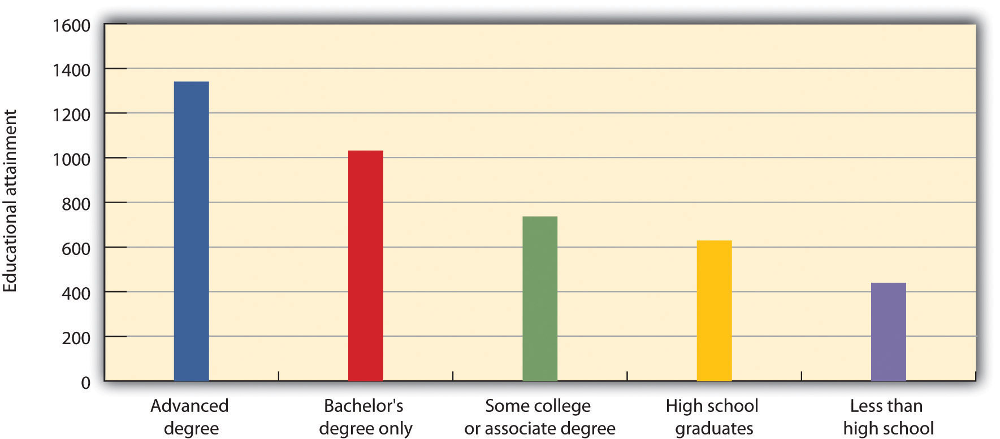
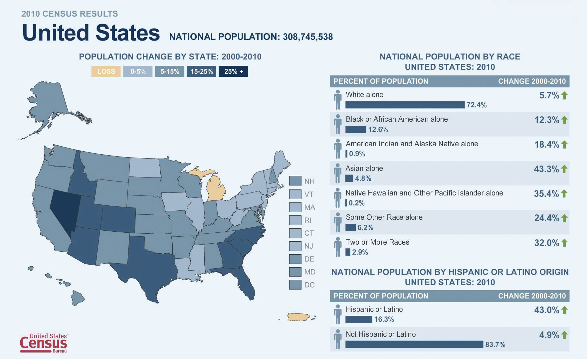

All departments within an organization must prove their value and contributions to the overall business strategy, and the same is true with HRM. As companies are becoming more concerned with cutting costs, HRM departments must show the value they add to the organization through alignment with business objectives. Being able to add value starts with understanding some of the challenges of businesses and finding ways to reduce a negative impact on the business. This section will discuss some of the HRM challenges, and the rest of this text will dive into greater detail about how to manage these challenges.
If you were to ask most business owners what their biggest challenges are, they will likely tell you that cost management is a major factor to the success or failure of their business. In most businesses today, the people part of the business is the most likely place for cuts when the economy isn’t doing well.
Consider the expenses that involve the people part of any business:
These costs cut into the bottom line of any business. The trick is to figure out how much, how many, or how often benefits should be offered, without sacrificing employee motivation. A company can cut costs by not offering benefits or 401(k) plans, but if its goal is to hire the best people, a hiring package without these items will most certainly not get the best people. Containment of costs, therefore, is a balancing act. An HR manager must offer as much as he or she can to attract and retain employees, but not offer too much, as this can put pressure on the company’s bottom line. We will discuss ways to alleviate this concern throughout this book.
For example, there are three ways to cut costs associated with health care:
Health care costs companies approximately $4,003 per year for a single employee and $9,764 for families. This equals roughly 83 percent and 73 percent of total health-care costs for single employees and employees with families,“Use Three Strategies to Cut Health Care Costs,” Business Management Daily, September 9, 2010, accessed October 10, 2010, http://www.businessmanagementdaily.com/articles/23381/1/Use-3-strategies-to-cut-health-care-costs/Page1.html. respectively. One possible strategy for containment for health-care plans is to implement a cafeteria plan. Cafeteria plansA type of benefits plan that gives all employees a minimum level of benefits and a set amount the employee can spend on flexible benefits, such as additional health care or vacation time. started becoming popular in the 1980s and have become standard in many organizations.Mary Allen, “Benefits, Buffet Style—Flexible Plans,” Nation’s Business, January 1997, accessed October 1, 2010, http://findarticles.com/p/articles/mi_m1154/is_v75/ai_4587731. This type of plan gives all employees a minimum level of benefits and a set amount to spend on flexible benefits, such as additional health care or vacation time. It creates more flexible benefits, allowing the employee, based on his or her family situation, to choose which benefits are right for them. For example, a mother of two may choose to spend her flexible benefits on health care for her children, while a single, childless female may opt for more vacation days. In other words, these plans offer flexibility, while saving money, too. Cost containment strategies around benefits will be discussed in Chapter 6 "Compensation and Benefits".
Another way to contain costs is by offering training. While this may seem counterintuitive, as training does cost money up front, it can actually save money in the long run. Consider how expensive a sexual harassment lawsuit or wrongful termination lawsuit might be. For example, a Sonic Drive-In was investigated by the Equal Opportunity Employment Commission (EEOC) on behalf of seventy women who worked there, and it was found that a manager at one of the stores subjected the victims to inappropriate touching and comments. This lawsuit cost the organization $2 million.“LL Sonic Settles EEOC Lawsuit for $2 Million,” Valencia County News Bulletin, June 23, 2011. Some simple training up front (costing less than the lawsuit) likely would have prevented this from happening. Training employees and management on how to work within the law, thereby reducing legal exposure, is a great way for HR to cut costs for the organization as a whole. In Chapter 8 "Training and Development", we will further discuss how to organize, set up, and measure the success of a training program.
The hiring process and the cost of turnoverReplacement of employees who are fired or quit. The term is normally expressed as a percentage: the ratio of the number of workers who had to be replaced in a given period to the average number of workers at the organization. in an organization can be very expensive. Turnover refers to the number of employees who leave a company in a particular period of time. By creating a recruiting and selection process with cost containment in mind, HR can contribute directly to cost-containment strategies company wide. In fact, the cost of hiring an employee or replacing an old one (turnover) can be as high as $9,777 for a position that pays $60,000.James Del Monte, “Cost of Hiring and Turnover,” JDA Professional Services, Inc., 2010, accessed October 1, 2010, http://www.jdapsi.com/Client/articles/coh. By hiring smart the first time, HR managers can contain costs for their organization. This will be discussed in Chapter 4 "Recruitment" and Chapter 5 "Selection". Reducing turnover includes employee motivational strategies. This will be addressed in Chapter 7 "Retention and Motivation".
In a survey reported on by the Sales and Marketing Management newsletter,“The Cost of Poor Communications,” Sales and Marketing, December 22, 2006, accessed October 1, 2010, http://www.allbusiness.com/marketing-advertising/4278862-1.html. 85 percent of managers say that ineffective communication is the cause of lost revenue. E-mail, instant messaging, text messages, and meetings are all examples of communication in business. An understanding of communication styles, personality styles, and channels of communication can help us be more effective in our communications, resulting in cost containment. In HRM, we can help ensure our people have the tools to communicate better, and contain costs and save dollars in doing so. Some of these tools for better communication will be addressed in Chapter 9 "Successful Employee Communication".
One cost-containment strategy for US businesses has been offshoring. OffshoringMoving jobs overseas to contain costs. refers to the movement of jobs overseas to contain costs. It is estimated that 3.3 million US jobs will be moved overseas by 2015.Vivek Agrawal and Diana Farrell, “Who Wins in Offshoring?” in “Global Directions,” special issue, McKinsey Quarterly, (2003): 36–41, https://www.mckinseyquarterly.com/Who_wins_in_offshoring_1363. According to the US Census Bureau, most of these jobs are Information Technology (IT) jobs as well as manufacturing jobs. This issue is unique to HR, as the responsibility for developing training for new workers and laying off domestic workers will often fall under the realm of HRM. Offshoring will be discussed in Chapter 14 "International HRM", and training for new workers will be discussed in Chapter 8 "Training and Development".
Of course, cost containment isn’t only up to HRM and managers, but as organizations look at various ways to contain costs, human resources can certainly provide solutions.
Technology has greatly impacted human resources and will continue to do so as new technology is developed. Through use of technology, many companies have virtual workforces that perform tasks from nearly all corners of the world. When employees are not located just down the hall, management of these human resources creates some unique challenges. For example, technology creates an even greater need to have multicultural or diversity understanding. Since many people will work with individuals from across the globe, cultural sensitivity and understanding is the only way to ensure the use of technology results in increased productivity rather than decreased productivity due to miscommunications. Chapter 3 "Diversity and Multiculturalism" and Chapter 14 "International HRM" will discuss some specific diversity issues surrounding a global workforce.
Technology also creates a workforce that expects to be mobile. Because of the ability to work from home or anywhere else, many employees may request and even demand a flexible schedule to meet their own family and personal needs. Productivity can be a concern for all managers in the area of flextime, and another challenge is the fairness to other workers when one person is offered a flexible schedule. Chapter 6 "Compensation and Benefits" and Chapter 7 "Retention and Motivation" will discuss flextime as a way to reward employees. Many companies, however, are going a step further and creating virtual organizationsAn organization that does not have a physical office; rather, employees use technology and do their job from home or the location of their choice., which don’t have a physical location (cost containment) and allow all employees to work from home or the location of their choice. As you can imagine, this creates concerns over productivity and communication within the organization.
The use of smartphones and social networking has impacted human resources, as many companies now disseminate information to employees via these methods. Of course, technology changes constantly, so the methods used today will likely be different one year or even six months from now.
The large variety of databases available to perform HR tasks is mind boggling. For example, databases are used to track employee data, compensation, and training. There are also databases available to track the recruiting and hiring processes. We will discuss more about technology in HR in Chapter 4 "Recruitment" through Chapter 8 "Training and Development".
Of course, the major challenge with technology is its constantly changing nature, which can impact all practices in HRM.
Too Many Friends
You are the HR manager for a small company, consisting of twenty-three people plus the two owners, Steve and Corey. Every time you go into Steve’s office, you see he is on Facebook. Because he is Facebook friends with several people in the organization, you have also heard he constantly updates his status and uploads pictures during work time. Then, at meetings, Steve will ask employees if they saw the pictures he recently uploaded from his vacation, weekend, or backpacking trip. One employee, Sam, comes to you with a concern about this. “I am just trying to do my job, but I feel if I don’t look at his photos, he may not think I am a good employee,” she says. How would you handle this?
How Would You Handle This?
https://api.wistia.com/v1/medias/1371241/embedThe author discusses the How Would You Handle This situation in this chapter at: https://api.wistia.com/v1/medias/1371241/embed.
CyberloafingUsing a work computer for personal reasons, resulting in lost productivity., a term used to describe lost productivity as a result of an employee using a work computer for personal reasons, is another concern created by technology. One study performed by Nucleus Research found that the average worker uses Facebook for fifteen minutes per day, which results in an average loss of 1.5 percent of productivity.“Facebook Use Cuts Productivity at Work,” Economic Times, July 25, 2009, accessed October 4, 2010, http://economictimes.indiatimes.com/tech/internet/Facebook-use-cuts-productivity-at-work-Study/articleshow/4818848.cms. Some workers, in fact, use Facebook over two hours per day during working hours. Restricting or blocking access to the Internet, however, can result in angry employees and impact motivation at work. Motivational factors will be discussed in Chapter 7 "Retention and Motivation".
Technology can create additional stress for workers. Increased job demands, constant change, constant e-mailing and texting, and the physical aspects of sitting in front of a computer can be not only stressful but also physically harmful to employees. Chapter 13 "Safety and Health at Work" will deal with some of these stress issues, as well as safety issues such as carpal tunnel, which can occur as a result of technology in the workplace. More on health and safety will be covered in Chapter 10 "Managing Employee Performance".
Tough economic times in a country usually results in tough times for business, too. High unemployment and layoffs are clearly HRM and managerial issues. If a human resource manager works for a unionized company, union contracts are the guiding source when having to downsize owing to a tough economy. We will discuss union contracts in greater detail in Chapter 12 "Working with Labor Unions". Besides union restrictions, legal restrictions on who is let go and the process followed to let someone go should be on the forefront of any manager’s mind when he or she is required to lay off people because of a poor economy. Dealing with performance issues and measuring performance can be considerations when it is necessary to lay off employees. These issues will be discussed in Chapter 10 "Managing Employee Performance" and Chapter 11 "Employee Assessment".
Likewise, in a growth economy, the HR manager may experience a different kind of stress. Massive hiring to meet demand might occur if the economy is doing well. For example, McDonald’s restaurants had to fill six hundred positions throughout Las Vegas and held hiring day events in 2010.“McDonald’s Readies for Massive Hiring Spree,” Fox 5 News, Las Vegas, May 2010, accessed October 5, 2010, http://www.fox5vegas.com/news/23661640/detail.html (site discontinued). Imagine the process of hiring this many people in a short period of time The same recruiting and selection processes used under normal circumstances will be helpful in mass hiring situations. Recruiting and selection will be discussed in Chapter 4 "Recruitment" and Chapter 5 "Selection".
Human resources should be aware that the workforce is constantly changing. For example, in the 2010 census, the national population was 308,745,538, with 99,531,000 in 2010 working full time, down from 2008 when 106,648,000 were working full time.Bureau of Labor Statistics, Current Population Survey Report, accessed July 7, 2011, http://www.bls.gov/cps/earnings.htm#education. For full-time workers, the average weekly salary was higher the more educated the worker. See Figure 1.6 for details.
Figure 1.6
The average weekly earnings for workers in the United States increase with more education.
Source: Data from US Bureau of Labor Statistics, “Usual Weekly Earnings of Wage and Salary Workers,” Table 5, Economic News Release, July 20, 2010, accessed August 19, 2011, http://www.bls.gov/opub/ted/2010/ted_20100726_data.htm.
Multigenerational is here to stay, and Xerox is the leader in recruiting of Generation Y talent. This age group has been moving into the labor market over the last six years, and this major demographic change, along with the retirement of baby boomers, has many companies thinking. Fortune 500 companies know they must find out where their new stars are coming from. In recruiting this new talent, Xerox isn’t looking to old methods, because they know each generation is different. For example, Xerox developed the “Express Yourself” recruiting campaign, which is geared around a core value of this generation, to develop solutions and change. Joe Hammill, the director of talent acquisition, says, “Gen Y is very important. Xerox and other companies view this emerging workforce as the future of our organization.”Stephanie Armour, “Generation Y: They’ve Arrived at Work with a New Attitude,” USA Today, November 6, 2005. Besides the new recruiting campaign, recruiters are working at what they term “core colleges”—that is, those that produce the kind of talent they need. For example, they developed recruitment campaigns with specific institutions such as the Rochester Institute of Technology because of its strong engineering and printing science programs. On their company website, they have a specific tab for the recent college graduate, emphasizing core values of this generation, including the ability to contribute, support, and build skills. With its understanding of multicultural generations, Xerox has created a talent pool for years to come.
It is expected that over the next ten years, over 40 percent of the workforce will retire, and there will not be enough younger workers to take the jobs once held by the retiring workforce.Alvaro Fernandez, “Training the Aging Workforce,” SharpBrains, August 10, 2007, accessed October 6, 2010, http://www.sharpbrains.com/blog/2007/08/10/training-the-aging-workforce-and-their-brains. In fact, the American Society of Training and Development says that in the next twenty years, seventy-six million Americans will retire, and only forty-six million will replace them. As you can imagine, this will create a unique staffing obstacle for human resources and managers alike, as they try to find talented people in a pool that doesn’t have enough people to perform necessary jobs. The reason for this increase in retirement is the aging baby boomers. Baby boomersDefined by being born during the baby boom, which occurred after World War II during the years between 1946 and 1964. can be defined as those born between the years 1946 and 1964, according to the Census Bureau. They are called the baby boomers because there was a large increase of babies born after soldiers came back from World War II. Baby boomers account for seventy-six million people in the United States in 2011, the same year in which the first of the baby boomers have started to retire.
The impact of the baby boomer generation on our country and on human resource management is huge. First, the retirement of baby boomers results in a loss of a major part of the working population, and there are not enough people to fill those jobs that are left vacant. Second, the baby boomers’ knowledge is lost upon their retirement. Much of this knowledge isn’t formalized or written down, but it contributes to the success of business. Third, elderly people are living longer, and this results in higher health-care costs for all currently in the workforce. It is estimated that three out of five baby boomers do not have enough money saved for retirement,Joe Weisenthal, “3 of 5 Baby Boomers Don’t Have Enough for Retirement,” Business Insider Magazine, August 16, 2010, http://www.businessinsider.com/boomers-cutting-back-2010-8. meaning that many of them will depend on Social Security payments to meet basic needs. However, since the Social Security system is a pay-as-you-go system (i.e., those paying into the system now are paying for current retirees), there may not be enough current workers to cover the current Social Security needs. In fact, in 1950 there were 16 workers to support each Social Security beneficiary, but today there are only 3.3 workers supporting each beneficiary.Brenda Wenning, “Baby Boomer Retirement May Be a Bust,” Metrowest News Daily, March 21, 2010. The implications can mean that more will be paid by current workers to support retirees.
As a result of the aging workforce, human resources should keep abreast of changes in Social Security legislation and health-care costs, which will be discussed in Chapter 6 "Compensation and Benefits". In addition, human resource managers should review current workers’ skill levels and monitor retirements and skills lost upon those retirements, which is part of strategic planning. This will be discussed in Chapter 2 "Developing and Implementing Strategic HRM Plans". Having knowledge about current workers and skills, as well as predicting future workforce needs, will be necessary to deal with the challenges of an aging workforce.
Have you ever worked in a multigenerational organization? What were some of the challenges in working with people who may have grown up in a different era?
Another challenge, besides lack of workers, is the multigenerational workforce. Employees between the ages of seventeen and sixty-eight have different values and different expectations of their jobs. Any manager who tries to manage these workers from varying generations will likely have some challenges. Even compensation preferences are different among generations. For example, the traditional baby boomer built a career during a time of pensions and strongly held values of longevity and loyalty to a company. Compare the benefit needs of this person to someone who is younger and expects to save through a 401(k) plan, and it is clear that the needs and expectations are different.Michelle Capezza, “Employee Benefits in a Multigenerational Workplace,” EpsteinBeckerGreen, August 12, 2010, accessed October 6, 2010, http://www.ebglaw.com/showNewsletter.aspx?Show=13313. Throughout this book, we will discuss compensation and motivational strategies for the multigenerational workforce.
Awareness of the diversity of the workforce will be discussed in Chapter 3 "Diversity and Multiculturalism", but laws regarding diversity will be discussed throughout the book. Diversity refers to age, disability, race, sex, national origin, and religion. Each of these components makes up the productive workforce, and each employee has different needs, wants, and goals. This is why it is imperative for the HRM professional to understand how to motivate the workforce, while ensuring that no laws are broken. We will discuss laws regarding diversity (and the components of diversity, such as disabilities) in Chapter 3 "Diversity and Multiculturalism", Chapter 4 "Recruitment", Chapter 5 "Selection", Chapter 6 "Compensation and Benefits", and Chapter 7 "Retention and Motivation".
Figure 1.8 Demographic Data for the United States by Race
Source: Map courtesy of the US Census Department.
A discussion of ethics is necessary when considering challenges of human resources. Much of the discussion surrounding ethics happened after the early to mid-2000s, when several companies were found to have engaged in gross unethical and illegal conduct, resulting in the loss of billions of dollars from shareholders. Consider the statistics: only 25 percent of employees trusted their CEO to tell the truth, and 80 percent of people said that employers have a moral responsibility to society.Strategic Management Partners, “Unethical Statistics Announced At Business Leaders Event,” news release, http://www.consult-smp.com/archives/2005/02/unethical_stati.html, accessed August 31, 2011. Based on these numbers, an ethical workplace is important not only for shareholder satisfaction but for employee satisfaction as well. Companies are seeing the value of implementing ethics codes within the business.
Many human resource departments have the responsibility of designing codes of ethics and developing policies for ethical decision making. Some organizations hire ethics officers to specifically focus on this area of the business. Out of four hundred companies surveyed, 48 percent had an ethics officer, who reported to either the CEO or the HR executive.Mark McGraw, “The HR-Ethics Alliance,” HR Executive Online, June 16, 2011, accessed July 7, 2011, http://www.hreonline.com/HRE/story.jsp?storyId=533339153. According to Steve Miranda, chief human resources officer for the Society for Human Resource Management (SHRM), “[the presence of an ethics officer] provides a high-level individual with positional authority who can ensure that policies, practices, and guidelines are effectively communicated across the organization.”Mark McGraw, “The HR-Ethics Alliance,” HR Executive Online, June 16, 2011, accessed July 7, 2011, http://www.hreonline.com/HRE/story.jsp?storyId=533339153, brackets in the original.
For example, the insurance company Allstate recently hired a chief ethics and compliance officer (CECO) who offers a series of workshops geared toward leaders in the organization, because they believe that maintaining high ethical standards starts at the top of an organization. In addition, the CECO monitors reports of ethics complaints within the organization and trains employees on the code of ethics or code of conduct.Mark McGraw, “The HR-Ethics Alliance,” HR Executive Online, June 16, 2011, accessed July 7, 2011, http://www.hreonline.com/HRE/story.jsp?storyId=533339153. A code of ethicsA document that explains the expected ethical behavior of employees. is an outline that explains the expected ethical behavior of employees. For example, General Electric (GE) has a sixty-four-page code of conduct that outlines the expected ethics, defines them, and provides information on penalties for not adhering to the code. The code of conduct is presented below. Of course, simply having a written code of ethics does little to encourage positive behavior, so many organizations (such as GE) offer stiff penalties for ethics violations. Developing policies, monitoring behavior, and informing people of ethics are necessary to ensure a fair and legal business.
The following is an outline of GE’s code of conduct:“The Spirit and the Letter,” General Electric Company, accessed August 10, 2011, http://files.gecompany.com/gecom/citizenship/pdfs/TheSpirit&TheLetter.pdf.